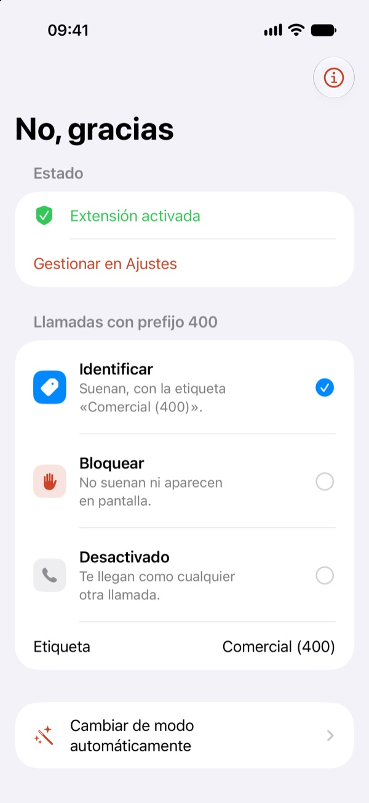
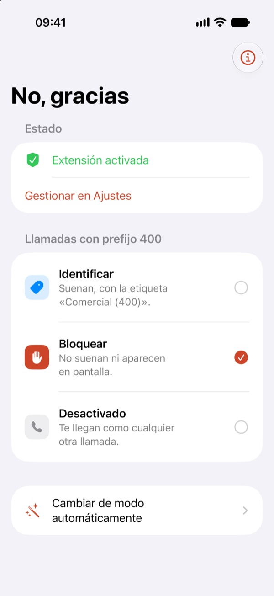
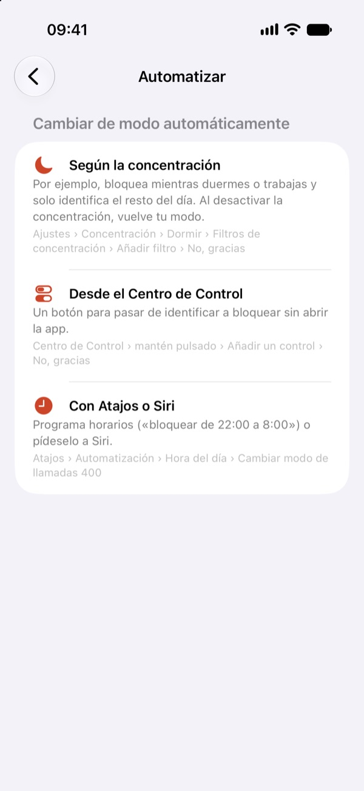

No, gracias
Identifica o bloquea en tu iPhone las llamadas comerciales con prefijo 400.

Próximamente. Gratis, sin anuncios, sin cuentas y sin recoger datos.



Identificar
La llamada suena, pero verás «Comercial (400)» en pantalla y decides si contestas.
Bloquear
Las llamadas 400 no suenan ni aparecen. Quien llama no se entera.
Con tu concentración
Bloquea mientras duermes o trabajas y vuelve a identificar el resto del día, solo.
Privada de verdad
Todo ocurre en tu iPhone. No ve tus llamadas, tus contactos ni tu historial.
¿Por qué el 400?
Desde el 17 de octubre de 2026, las llamadas comerciales en España deben hacerse desde números que empiezan por 400. Así se pueden reconocer de un vistazo, y «No, gracias» las reconoce por ti. Qué dice la norma · Cómo bloquear el 400 en el iPhone.
Cómo funciona
- Instala la app y ábrela.
- Actívala en Ajustes › Apps › Teléfono › Bloqueo e identificación de llamadas.
- Elige identificar o bloquear. Puedes cambiarlo cuando quieras desde la app, el Centro de Control, Siri o Atajos.
Gratis, y así seguirá
No tiene anuncios, ni versión de pago, ni suscripción. Si te resulta útil, desde la app puedes invitar a un café al desarrollador. No desbloquea nada: es solo una forma de dar las gracias.